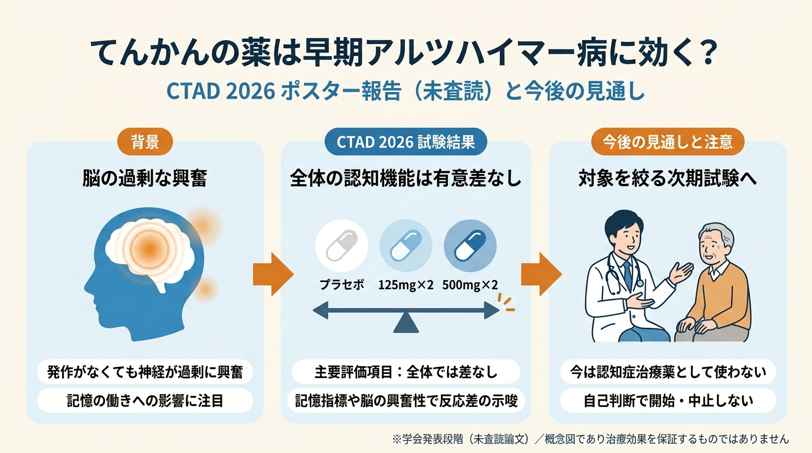

てんかんの薬は早期アルツハイマー病に効く？
CTAD 2026 でポスター発表された低用量レベチラセタム試験（学会発表段階・未査読論文）の要点をまとめた概念図です。

図の要点
- 背景：早期アルツハイマー病では、けいれん発作がなくても神経が過剰に興奮している例がある。
- CTAD 2026 試験結果：主要評価項目（全体認知機能）では統計的有意差なし。記憶スコアや脳の興奮性による反応差の示唆にとどまる。
- 今後の見通しと注意：対象を絞る次期試験が課題。現時点では認知症治療薬として使わず、自己判断での開始・中止もしない。
出典と注意
NeurologyLive 記事（2026年11月18日）に基づいて作成。学会発表段階であり査読付き論文ではありません。一般的な医学情報であり、治療変更を指示するものではありません。